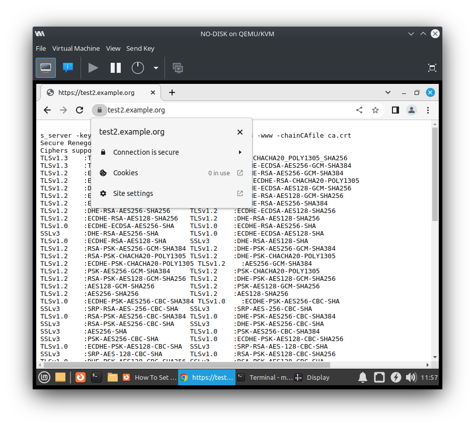
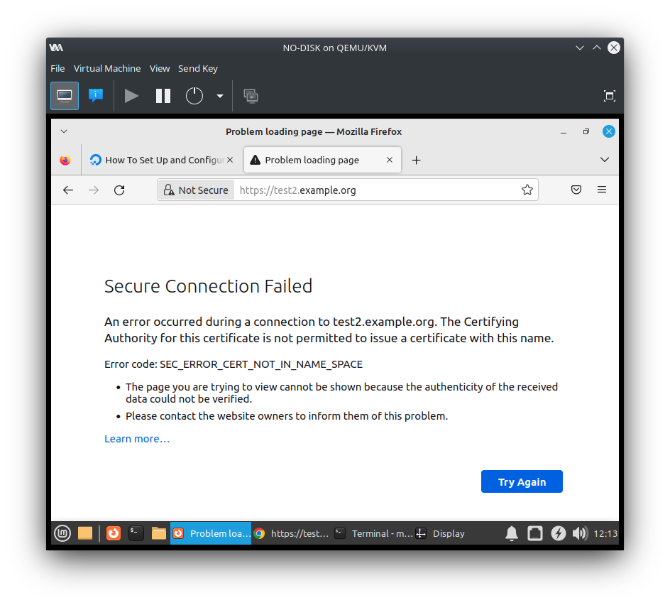
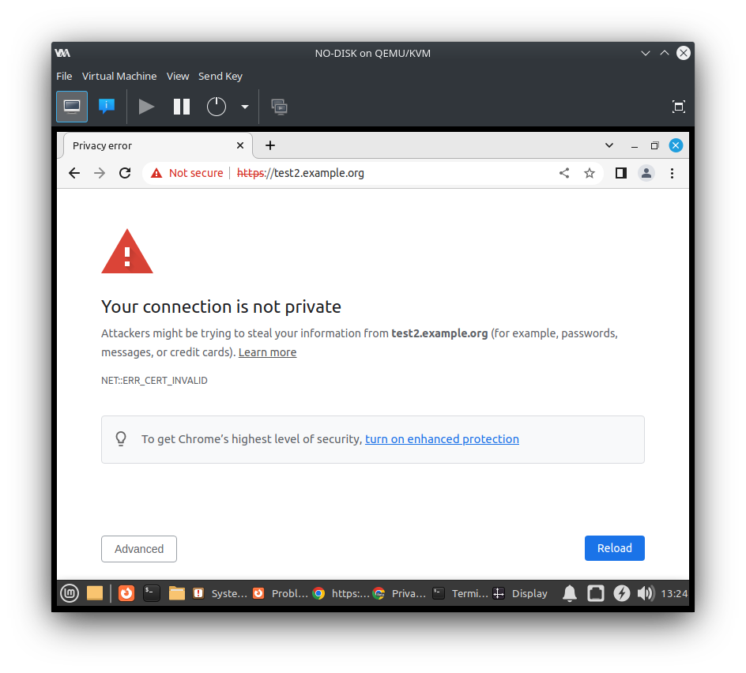

The X.509 Name Constraints extension is a powerful way to limit a certificate authority (CA) to only issue certificates for specific TLDs or domain names. Unfortunately, Google Chrome doesn't currently enforce name constraints for user imported trust roots on Linux. Review of related blog posts shows that developers have a poor understanding of how this feature is implemented, which could have unintended security impact. While Chrome's behavior is standards compliant, it is inconsistent with other web browsers, other TLS clients, and even Google Chrome running on different operating systems. Starting with the next Chrome release, enforcement of name constraints for trust roots will be enabled.
Let's say you run an internal network, probably using domains under .local. A public CA can't issue HTTPS certificates for .local because this TLD is not part of the public, global DNS system. No one can prove ownership of these domain name names, so the public CAs don't work here. If you're building with HTTPS, you may try creating a private CA.
Creating your own private CA is well documented online, so it's easy to get started. Unfortunately, as I'll explain, lots of documentation has omissions and security problems.
Let's start with this guide from DigitalOcean. DigitalOcean has some great documentation, so this looks like a good reference.
Following the instructions, I can create a private CA and issue a certificate for test.local. I'm going to use a Linux Mint 21.1 VM for this. Google Chrome version is 111.0.5563.146 (released March 2023) and Firefox is 108.0.1 (released December 2022).
The easiest way to confirm my work is to import the private CA into my browser trust store, start a web server, and load the page with Chrome. I'll do this with:
echo "127.0.0.1 test.local" >> /etc/hosts openssl s_server -key test-server.key -cert test-server.crt -accept 8080 -www -chainCAfile ca.crt
I can see that everything works in Chrome. Success!
Unfortunately, I've actually created a private CA with way too much power. If I follow the instructions from the DigitalOcean post again, but using www.google.com, I'll also get a valid certificate. When I run openssl s_server with this new certificate, Chrome trusts it too.
My concern is that compromise or misuse of the private CA makes it easier to perform a man-in-the-middle attack against any browser that trust that CA. The web browser will consider the misissued certificate as valid, so the user will have no indication that something bad has happened.
Perhaps the issue is just that I picked the wrong guide, DigitalOcean hosts great content, but this one didn't have what I wanted. Let's choose a different blog, like this one which was written by a Google security engineer.
This guide focuses on the X.509 certificate extension known as Name Constraints. A certificate can specify name constraints such that it can only issue certificates that fall under a specified TLD or domain name. That sounds like a great mitigation, it reduces the scope of impact for a compromised private CA. Let's try it out.
Following the instructions, I see openssl confirm that test.crt is valid and test2.crt is invalid.
$ openssl verify -CAfile ca.crt test.crt test.crt: OK $ openssl verify -CAfile ca.crt test2.crt CN = test2.example.org error 47 at 0 depth lookup: permitted subtree violation error test2.crt: verification failed
Great, it really looks like I've done it. Our private CA can issue certificates for .example.com, but not .example.org.
But I'd like to take one more verification step, I'll check my certificates in Chrome. After all, my users will connect via a web browser, not using the OpenSSL command line tool.
As expected, test.example.com works:
But, yikes! test2.example.org also works:

Does Firefox see the same thing?

No, Firefox says that the CA is not permitted to issue a certificate with this name, which is what I had hoped Chrome would do. It sort of looks like a bug in Google Chrome's TLS implementation. What's actually happening here?
This chromium issue has a great explanation of what's going on. First, notice that both Firefox on Linux and Chromium on macOS reject the certificate. So this appears to be Chrome on Linux specific behavior.
Ryan Sleevi gives a great answer about this, which I'll quote: "It sounds like you're placing nameConstraints on the root, which is not supported, not only in Chrome, but many major PKI implementations. That's because RFC 5280 does not require such support; imported root certificates are treated as trust anchors (that is, only the Subject and SPKI are used, not other extensions)", "this may be WontFix/WorkingAsIntended", and "Marking this as not a Security Bug."
Looking at the RFC text I see:
Ryan also provides a workaround: "place the constraints on the intermediate". Unfortunately, placing constraints on the intermediate leaves the root certificate unconstrained, so it's a partial fix only for my use case.
Instead of adding name constraints on the private CA's root certificate, I could create an intermediary certificate and put the name constraint there. Then I'd issue certificates only with the intermediary cert.
flowchart LR
A(ROOT) -.-> B(INTERMEDIARY
name constrained) -.-> C(WEBMAIL.LOCAL) & D(WIKI.LOCAL)
style A fill:#8f8;
style B fill:#8f8;
style C fill:#8f8;
style D fill:#8f8;
If the intermediate certificate is stolen, it could be used to issue additional certificates for the attacker. If the attacker issued certificates that violate the name constraints, a compliant client would reject them, mitigating the MITM attack risk. So we've limited the scope to just the constrained namespace.
flowchart LR
A(ROOT) -.-> B(INTERMEDIARY
name constrained) -.-> C(WEBMAIL.LOCAL) & D(WIKI.LOCAL) & E(WEBMAIL.LOCAL)
B -.-x F(SECURE.EXAMPLE.COM)
style A fill:#8f8
style B fill:#8f8
style C fill:#8f8
style D fill:#8f8
style E fill:#8f8,stroke:#f66,stroke-width:3px,stroke-dasharray: 5 5
style F fill:#bbb,stroke:#f66,stroke-width:3px,stroke-dasharray: 5 5
Unfortunately, a stolen root certificate behaves differently. Google Chrome on Linux won't honor any name constraints on the root, so the attacker can issue certificates for any domain name. Web browsers will consider these certificates to be valid, and the MITM attack can proceed unnoticed.
flowchart LR
A(ROOT) -.-> B(INTERMEDIARY
name constrained) -.-> C(WEBMAIL.LOCAL) & D(WIKI.LOCAL)
A -.-> E(WEBMAIL.LOCAL) & F(SECURE.EXAMPLE.COM)
style A fill:#8f8;
style B fill:#8f8;
style C fill:#8f8;
style D fill:#8f8;
style E fill:#8f8,stroke:#f66,stroke-width:3px,stroke-dasharray: 5 5
style F fill:#8f8,stroke:#f66,stroke-width:3px,stroke-dasharray: 5 5
It should go without saying that all CA private keys, especially for the root, need to be handled with security best practices.
Starting with Chrome 112 name constraints will be enforced for user imported trust roots. Chrome 112 is currently in beta, so let's give it a try:

Success! Chrome on Linux will soon behave the same as Chrome on macOS and Firefox. (Since this post was published, Chrome 112 has been reached the Stable channel).
I'm happy Chrome is implementing this feature as it brings Chrome's handling of X.509 certificates more inline with developer expectations.
One remaining concern of mine stems from Ryan's assessment of the TLS client landscape: "nameConstraints on the root, [...] is not supported, not only in Chrome, but many major PKI implementations". While Google Chrome will add support very soon, other fully standards compliant TLS clients may continue to lack support. A TLS client can defend their lack of support, citing that the RFC considers enforcement to be optional. It's unclear to me which clients enforce name constraints on trust root and which don't, so I'm wary to consider name constraints as more than a partial mitigation.
Developers tend to test on one platform and assume that security behaviors will match on others, but this isn't the case. Tracking behavioral differences of TLS implementations is a hard problem. Netflix created BetterTLS to track standards implementation of TLS clients. The results for Chromium show no failed tests, even though I clearly demonstrated enforcement was missing. I suspect this is because Chrome's lack of enforcement is standards compliant, even if it's undesired.
My best guidance, for now, is to consider all private CAs as if they could issue certificates for the entire Internet. Treat the private keys of your private CAs with the utmost care to protect them from compromise or misuse. Avoid trusting a private CA unless you are sure the private keys will be properly protected.
If it's helpful to anyone, I'm sharing
the private CAs and certificates
I created.
Some of these are password protected, the password is
1234.
Please don't use this outside a VM or other isolated environment, these are leaked keys and they are unsafe.
Hello! I'm Robert Alexander, a freelance software developer and security consultant. This blog features some of my work and thoughts on software, the cloud, and security. You can get updates on my posts with your favorite RSS client or on Substack. I'm also on Mastodon.